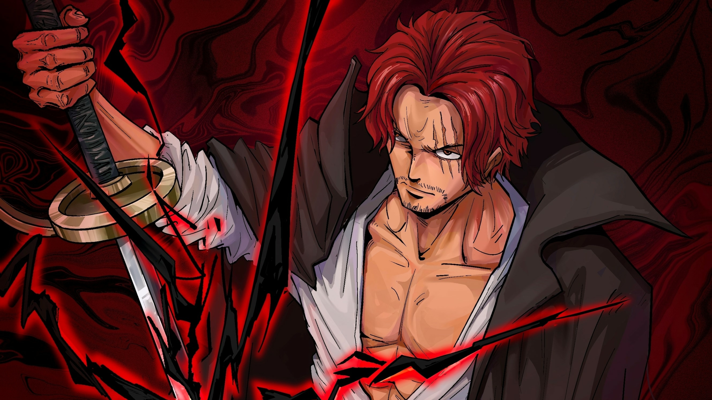

NUR ALIK KATU

Tentang diri saya
HANYA mahasiswa biasa dengan latar belakang fisika dengan fokus elektronika & Instrumentasi
Education
- Undergraduate Physics -HASANUDDIN UNIVERSITY unhas,
Physics
- Graduate Computer Engineering and Informatics -Vocational School Palopo
HOBBIES
-
MANCING
sejak kecil-sekarang
- mancing di empang
- mancing di sungai
- Mancing di laut
-
KESIBUKAN
2025-Present
Skills
- main mobile legend ⭐⭐⭐⭐⭐
- main point blank ⭐⭐⭐⭐
- main ep-ep ⭐⭐⭐⭐⭐
Awards and Certifications
- tidak punya penghargaan dan sertiikat
PROJECT SEDERHANA